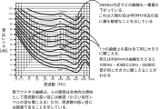

2023年
問題83 音に関する次の記述のうち，最も不適当なものはどれか．
（1）音圧レベルは，人間の最小可聴値の音圧を基準として定義された尺度である．
（2）騒音レベルとは，人間の聴覚の周波数特性を考慮した騒音の大きさを表す尺度である．
（3）時間によって変動する騒音は，等価騒音レベルによって評価される．
（4）空気調和機から発生した音が隔壁の隙間などを透過してくる音は，固体伝搬音である．
（5）遮音とは，壁などで音を遮断して，透過する音のエネルギーを小さくすることである．
2023年
問題83 正解（4） 頻出度AAA
空気調和機から発生した音が隔壁の隙間などを透過してくる音は，「空気伝搬音」である．
騒音はエネルギーの伝わり方から見た場合，設備機器等から発生した音や交通騒音が空気中を伝搬してくる空気伝搬音と，設備機器等の振動が建物躯体内を伝搬して居室の内装材から放射される固体伝搬音に分けられる（2023-83-1表参照）．
2023-83-1表 空気伝搬音と固体伝搬音
| 空気伝搬音 | ・空調機から発生した音が隔壁・隙間等を透過してくる音 ・ダクト内を伝搬して給排気口から放射する音 ・ダクト内を伝搬してダクト壁から透過する音 ・窓から入る道路交通騒音，鉄道軌道騒音 |
| 固体伝搬音 | ・空調機自体の振動に起因して発生する音 ・ダクト・管路系の振動に起因する音 ・ポンプに接続された管路系で発生する音 ・給排水騒音，電気室騒音，エレベータ走行音，地下鉄騒音等 |
-(1) ，-(2) 音圧レベル，騒音レベル
音の物理的な強さは音の伝わる方向に対して垂直な単位面積を単位時間に通過する音のエネルギーなので，単位はW（ワット）/m2である．人間の耳の可聴範囲はエネルギー的には約10-12W/m2から最大102W/m2であって，その範囲は14桁に及ぶ．
ある基準値との比の対数をとって量を表示することをレベル表示（デシベル尺度）という．
考察の対象とする量が数十桁にわたり，そのままでは扱いにくい場合にレベル表示が用いられる．これを音に用いて，音響工学では音のパワーレベルを次のように定義している． \[L_i=10\log_{10}\frac{I}{I_0}\]
ただし，\(L_i\)：音の強さのレベル［dB］，\(I\)：音の強さ［W/m2］，\(I_0\)：基準の音の強さ（10-12W/m2）．
上記の可聴範囲（10-12W/m2～最大102W/m2）をレベル表示すると，
レベル表示により，最小と最大値で1012～102と14桁もの開きがあったものが0～140dBと3桁で表現できることになる．
実際に音の強さを測定する場合は，エネルギーを直接測定することが難しいので，音圧\(p\)［Pa］を測定する．
音の強さは，空気の密度を\(\rho\)：［kg/m3］，音速を\(c\)：とすると，次式で表される． \[I=\frac{p^2}{\rho c}\]
すなわち，音の強さは，音圧の2乗に比例するので，音圧レベルを次のように定義すると，同じ音に対して強さのレベルと音圧レベルが一致することになる．
ただし，\(L_p\)：音圧レベル［dB］，\(p\)：音圧［Pa］，\(p_0\)：基準の音圧（2×10-5Pa=基準の音の強さ10-12W/m2に相当）．
例えば2Paの音圧レベルは，
さらに，この音圧レベルを，人の聴覚の周波数特性をあらわした等ラウドネス曲線（2023-83-1図）によって補正した音圧レベルをA特性音圧レベルといい，単なる音圧レベルと区別するために，単位に［dB(A)］を用いる．騒音計のA特性音圧レンジで計測した騒音レベル［dB(A)］は騒音の評価の基本となる．

-(3) 等価騒音レベル（LAeq）：一定時間にわたって時間的に変動する騒音レベルをエネルギー的に等価な定常騒音レベルで表した量．24時間等価騒音レベルなら，LAeq24h＝55dBなどと記述する．
環境基本法の騒音に関する環境基準にも用いられている（住宅地・夜間LAeq45dB以下，等）．
-(5)遮音は，壁などで音を遮断して，透過する音のエネルギーを小さくすることはである．その実体は「吸収」と「反射」である（2023-83-2図参照）．
上図で，\(I_i=I_r+I_a+I_t\)
ただし，\(I_i\)：入射音の強さ，\(I_r\)：反射音の強さ，\(I_a\)：吸収の強さ，\(I_t\)：透過音の強さ（単位は全て［W/m2]）．
壁の遮音性能は次式の透過損失値\(TL\)［dB］で表される． \[ TL=10 \log _{10} \frac{I_i}{I_t}\]